Stride のインストール
初級
Stride インストーラー (StrideSetup.exe) を Stride の Web サイトからダウンロードします。
StrideSetup.exe ファイルをダブルクリックします。
Stride セットアップ ウィザードが開きます。
Stride には .NET Framework 4.7.2 が必要です。ない場合は、インストールを求めるメッセージが表示されます。
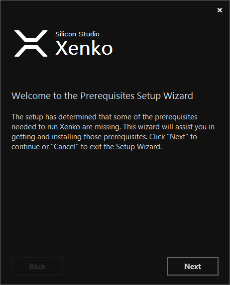
［Next］をクリックしてプロンプトに従います。
Note
または、.NET Framework を Microsoft ダウンロード センターからダウンロードして、Stride インストーラーを再実行してもかまいません。
Stride セットアップ ウィザードが開きます。
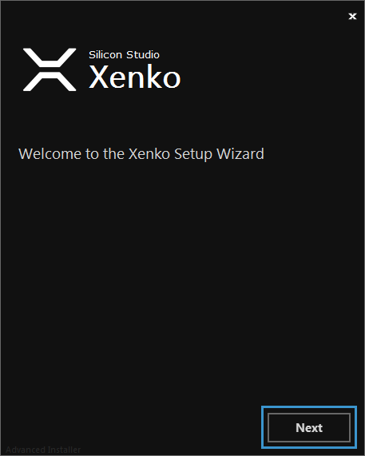
［Next］をクリックします。
［Stride License Agreement］ウィンドウが開きます。
［Accept］をクリックします。
［Stride installation type］ウィンドウが開きます。
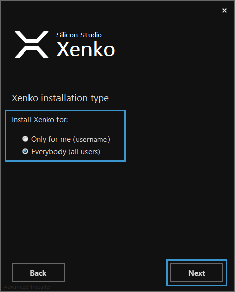
インストールの種類を選択し、［Next］をクリックします。
［Select installation folder］ウィンドウが開きます。
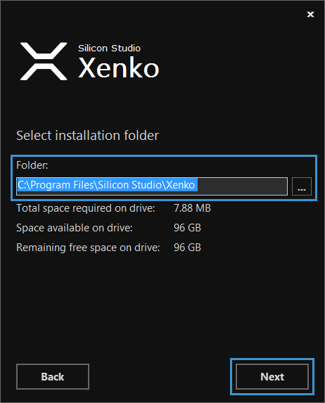
Stride をインストールするフォルダーを選択し、［Next］をクリックします。
［Create application shortcuts］ウィンドウが開きます。
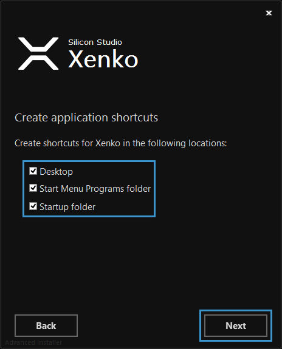
作成するショートカットを選択し、［Next］をクリックします。
［Ready to Install］ウィンドウが開きます。
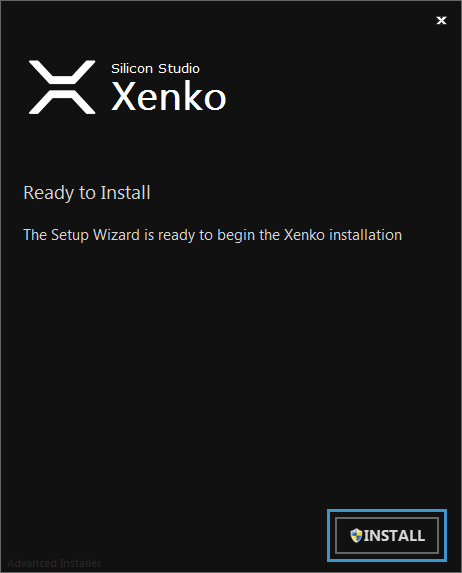
［Install］をクリックします。
インストールが開始します。
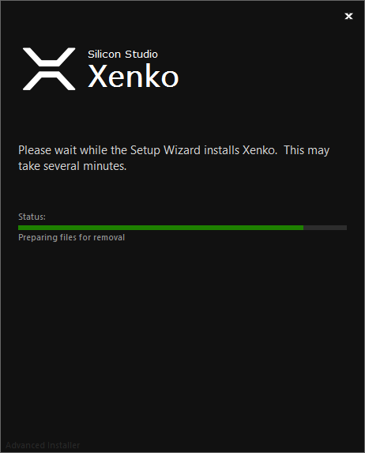
インストーラーが閉じた後、選択した場所にショートカットが作成されて、Stride Launcher が開きます。
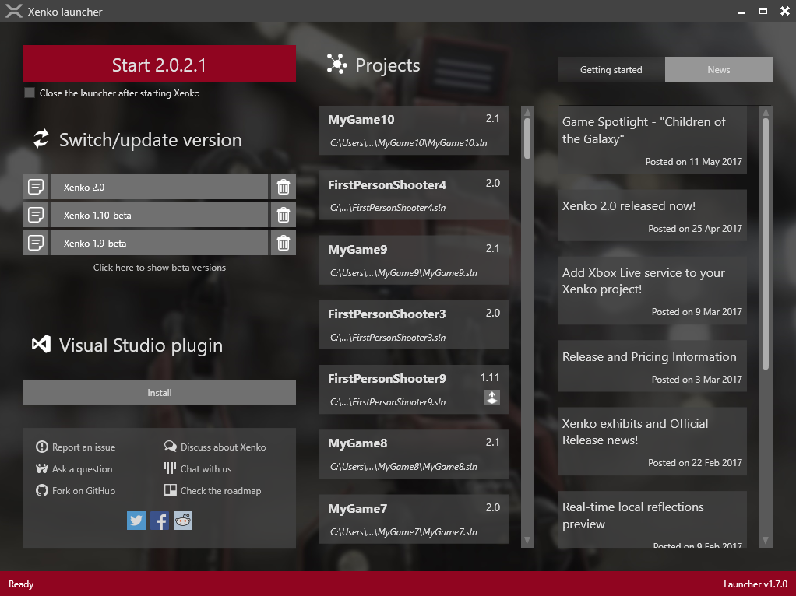
最新バージョンの Stride のインストールを求めるメッセージが表示されます。
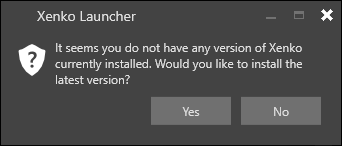
［Yes］をクリックします。
Visual Studio 統合をインストールするかどうかの確認を求めるメッセージが表示されます。Visual Studio 統合機能を使用すると、Visual Studio から直接シェーダーを編集でき、構文の強調表示、検証でのライブ コード分析、エラー チェック、ナビゲーションなどが提供されます。統合機能のインストールは必須ではありませんが、インストールすることをお勧めします。
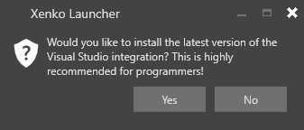
Stride によるコンピューターの変更の許可を求めるメッセージが表示されます。
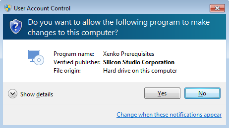
［Yes］をクリックします。
前提条件である Visual C++ 再頒布可能パッケージがインストールされているかどうかがチェックされます。インストールされていない場合は、メッセージに従ってインストールします。
前提条件である Visual Studio Build Tools がインストールされているかどうかがチェックされます。Visual Studio がある場合は、既にインストールされています。インストールされていない場合は、メッセージに従ってインストールします。
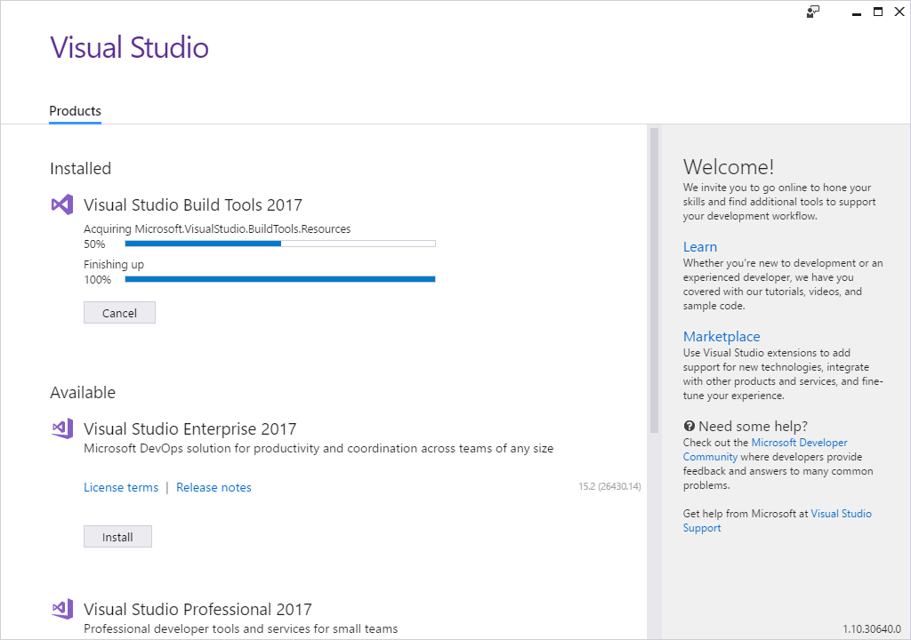
Note
Windows は Visual Studio インストーラーを使用して Visual Studio Build Tools をインストールしますが、Visual Studio はインストールしません。
Stride がインストールされて使用できる状態になります。
Note
前提条件をインストールしないと、Stride は動きません。その場合は、前提条件を個別にダウンロードしてインストールできます。方法については、「トラブルシューティング — Stride が実行しない」を参照してください。
または、Stride をアンインストールし、Stride インストーラーを再実行して、メッセージが表示されたら前提条件をインストールします。